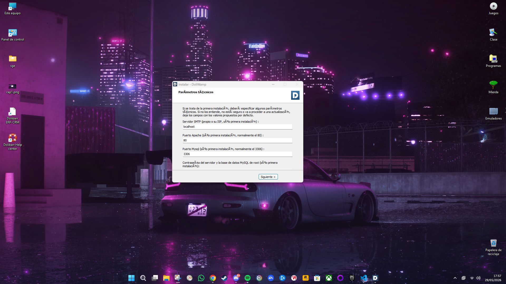
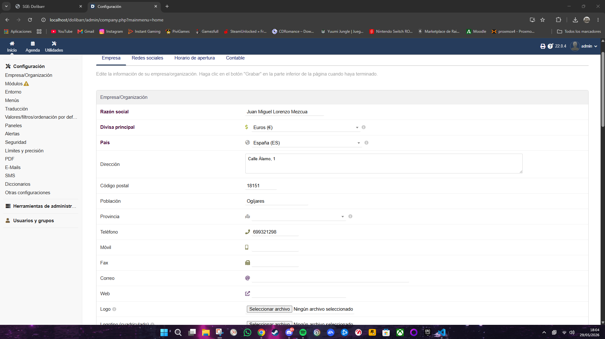
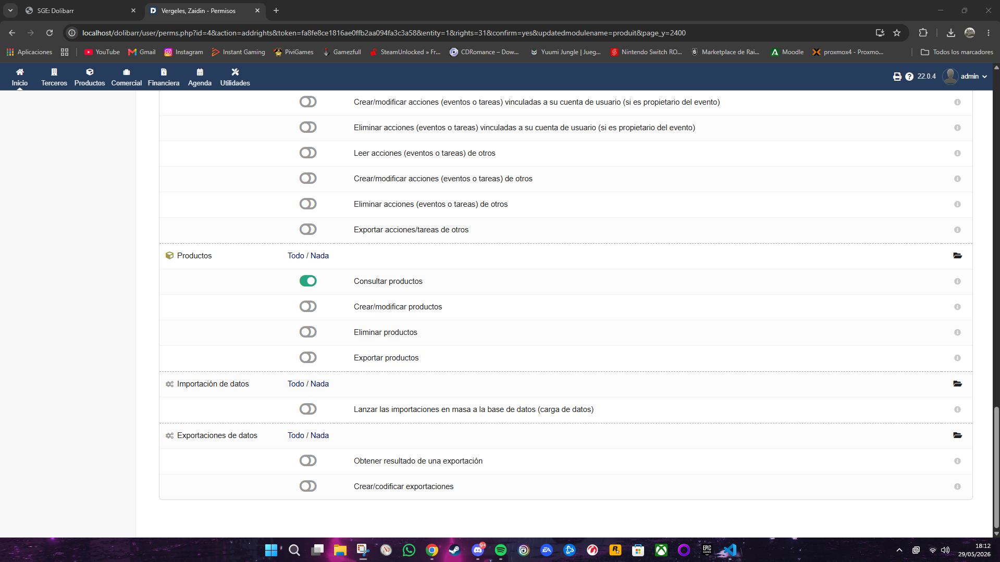
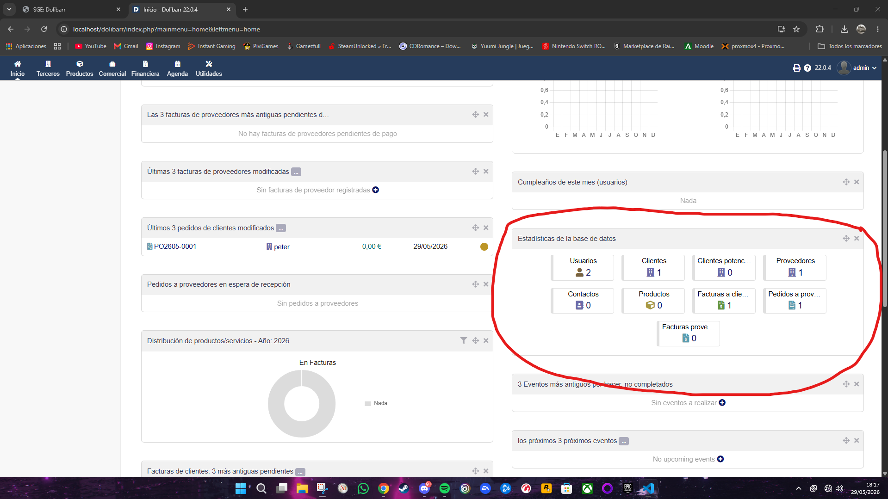
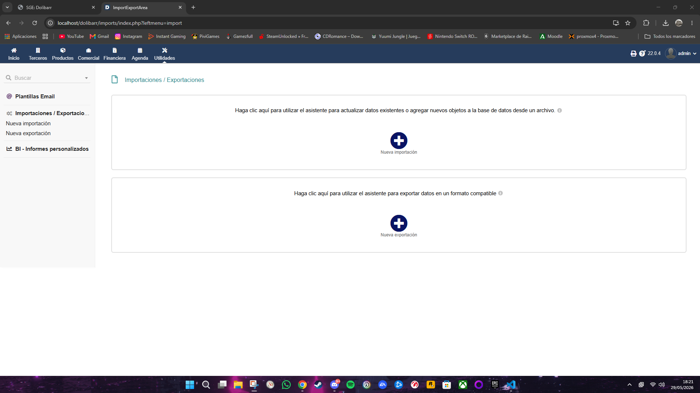

Tutorial: Dolibarr SGE
Para esta sección hemos seleccionado Dolibarr, un software gratuito para pequeñas y medianas empresas:
1. Instalación
Para instalar Dolibarr se descarga el paquete oficial DoliWamp, el cual incluye de forma automática todo lo necesario.
- paso 1: Ejecutar el instalador descargado y pulsamos siguiente, elegimos donde instalarlo y si queremos un acceso directo en el escritorio.
- Paso 2: Definir el puerto del servidor web (por defecto el puerto 80).
- Paso 3: Se nos abrirá el navegador web y finalizaremos la configuración creando las credenciales del Administrador.

2. Administración y Configuración
Una vez dentro del panel, notaremos que aparecen dos opciones con un simbolo de alerta. Lo primero es ir a "Empresa/Organización" para introducir los datos de nuestra compañía. Luego, en el menú de "Módulos" activamos las funciones esenciales para trabajar: Terceros en clientes y proveedores, Facturas y Productos.

3. Acceso Seguro: Roles y Privilegios
Accedemos a "Usuarios y Grupos" para dar de alta nuevos empleados. A cada usuario se le puede restringir el acceso. Por ejemplo, podemos configurar que un empleado solo vea productos.

4. Elaboración e Informe de Datos
El sistema genera resúmenes automáticos de la actividad empresarial. Vamos a emitir un pedido a proovedor y una factura de prueba, el panel de control de Dolibarr muestra resumenes automáticos, facilitando la toma de decisiones.

5. Exportación de Información
Dolibarr cuenta con un asistente nativo en Utilidades - Exportaciones. Desde aquí se pueden extraer listados de clientes, productos o registros contables directamente a formatos como archivos de Excel para analizarlos.
